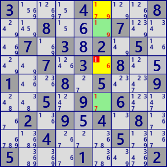
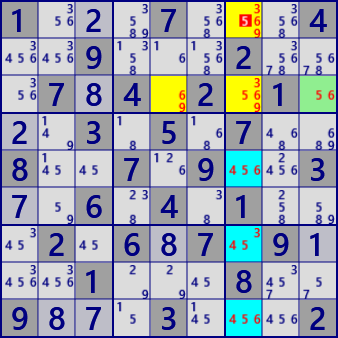

[GNPX v5.1]
Subset Exclusion Subset Exclusion_ALS
In the analysis algorithm of SubsetExclusion, House, ALS, Use RCC,.
How SubsetExclusion works
-
Focus on 2-3 cells on the board. Let's call these Stems (Stem is borrowed from DeathBloosom).
Cells may or may not belong to the same House.
If it does, it will be an Aligned Pair/Triple exclusion algorithm.
When solving with a program, there is almost no difference,
Therefore, "subset exclusion" is used without distinguishing between these.

-
On the board, focus on the "cell with two element elements" that belongs to the same House as the Stem, and call this "Leaf".
As shown in the figure on the right, even if the Stem does not belong to the same House,
it is assumed that each cell of the Stem belongs to the same House.
Leaf is connected to Stem.
In this state, Stem will never become [b,d]. There are no more Leaf candidates. Leaf is connected to Stem.
-
Generate a list of candidate digit combinations for Stem. In the case shown above, there are 6 pairs.
Candidate digit list: [a,a],[a,c],[a,d], [b,a],[b,c],[b,d]
- If the Stem cells belong to the same House, pairs of the same digit can be excluded from the list ([a,a] in the above figure).
- Excluded from the list by Leaf. In the example case,
[b,d] can be excluded from the list due to the Leaf digit set.
This process is applied to all leaves on the board.
- When the possibility of a certain digit is eliminated by evaluating the list of Stem candidate digit, it is determined negatively from the Stem candidate digit.
-
The situation is similar for 3-cell Stem.
In the case of a 3-cell stem and a 2-digit Leaf, all patterns that include the 2-digit Leaf can be excluded from the list.
For example, when the digit of Leaf is [a,b], [a,b,x],[x,a,b],[a,x,b] in the list can be excluded. Similarly, you can exclude candidates in the list that no longer hold Leaf.
In terms of program code, when the RCC and Leaf elements (of Stem and Leaf) match, they can be excluded from the list of candidate digit combinations for Stem.
-
ALS will also be LEAF[SubsetExclusion_ALS].
RCC between Stem and ALS eliminates candidates from the list.
-
(Summary) SubsetExclusion can be extended in the following way.
- SubsetExclusion holds true even if Stem is a Subset.
- RCC can also be defined between Subset (Stem) and ALS (Leaf). RCC allows you to exclude candidates from the list.
- Leaf ALS is valid even if there is overlap with each other
SubsetExclusion sample
Stem is also an example of Subset, SubsetExclusion, and SubsetExclusio_ALS (same situation).
In the third sample, the cells with orange dots in the upper left are areas where ALS overlaps.

SubsetExclusion
Stem: r7c36 #23457
Leaf: Cell r7c8 #23
Cell r7c4 #27

SubsetExclusion_with_ALS
Stem: r3c2 r7c3 #23457
Leaf: Cell r1c3 #23
ALS r37c8 #237 RCC#27
 SubsetExclusion_with_ALS(overlap)
SubsetExclusion_with_ALS(overlap)
Stem: r4c45 r6c8 #1234567
Leaf: Cell r6c5 #15
Cell r4c7 #123
Cell r4c9 #136
Cell r4c8 #235
ALS r4c79 r5c7 #1236 RCC#36